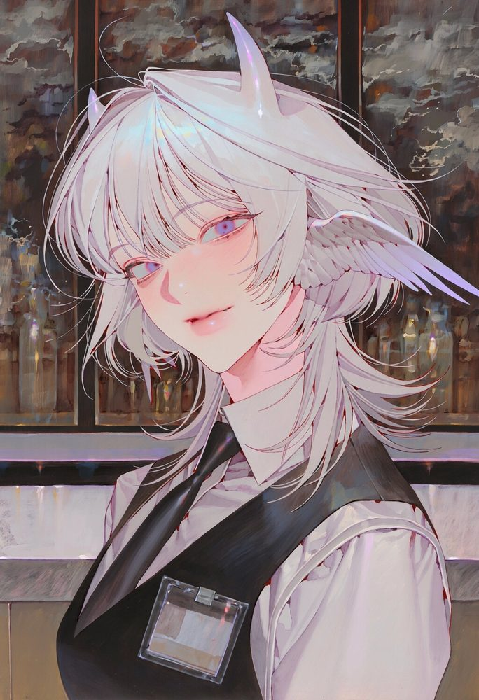
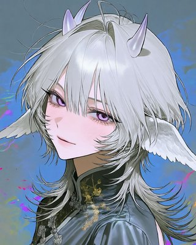
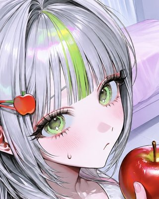
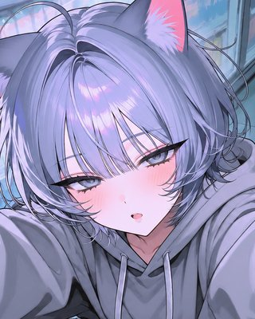

Heaven Corp.
FROM아히INTERNAL
TO방문자NO. 0001

EMPLOYEE IDHC—001
아히AHI
만들기도 하고 소비도 하는 계정이에요.
- Tendency성향
- 소통하는 걸 좋아해요. 말 걸어주시면 반갑게 받아요. 트정은 거의 하지 않는 편이에요.
- Network교류
- 교류가 많은 편이에요. 부담 갖지 말고 편하게 다가와 주세요.
- Platform플랫폼
- 제작 · 소비
지금은 리핀에서 지내고, 챗터링과 누아룸으로 이사 준비 중이에요.
02
계정 안내
Notice- Posts주로 올림
- 짤뽑 위주, 가끔 로그
- Dream드림
- 괴수토벌부대 차이리 드림
- Etc.그 외
- 내캐내먹 · 자컾 · 자관
- Caution지뢰
- 딱히 없어요.
03
오너캐 · 페르소나
Personnel
신아히OWNER CHARACTER
PROMPT
1girl, solo, 1.3::adult woman::, early 20s, cute soft face, refined face, fair skin, cool pinkish skin, 1.3::white hair::, silver-white hair, 1.4::messy hair::, 1.3::wolf cut::, 1.3::layered hair::, 1.2::shaggy hair::, medium hair, shoulder-length hair, longer hair at nape, 1.3::tapered hair ends::, 1.2::flipped hair::, hair ends flaring outward, pointy hair ends, 1.3::wispy hair::, thin hair strands, many stray hairs, loose strands, ahoge, messy strands sticking up, hair framing face, long sidelocks, 1.3::long bangs::, blunt bangs, 1.2::bangs over eyebrows::, bangs touching eyes, hair between eyes, slightly parted bangs, sharp hair strands, 1.3::purple eyes::, 1.2::elongated almond eyes::, gentle eyes, 1.3::short philtrum::, 1.2::high-set lips::, soft lips, 1.2::line-drawn aegyo sal::, slim, delicate, detailed beautiful face, 1.4::tiny horns::, 1.3::small horns::, 1.2::short conical horns::, pointed horns, 1.1::slightly curved outward::, 1.2::horns on top of head::, horns protruding through hair, widely spaced horns, one pair of horns, smooth horns, 1.3::silver horns::, metallic horns, 1.2::pale lavender gradient horns::, lavender tips, glossy horns, 1.3::head wings::, 1.3::white wings::, white feathers, feathered ears, wing ears, small wings near ears, fantasy, non-human, gentle smile, light blush, calm, refined, intense gaze, 1.3::three-quarter view::, 1.2::portrait::, upper body, bust, looking at viewer, head tilt

사과OWNER CHARACTER
PROMPT
1girl, solo, (adult woman:1.4), young adult, slender, adult proportions, (silver hair:1.2), long hair, (straight hair:1.2), (blunt bangs:1.3), (gradient hair:1.2), (pink hair tips:1.2), (lime green streak:1.2), single streak in bangs, light green eyes, (horizontally elongated eyes:1.3), (long almond eyes:1.2), wide eye shape, (slightly upturned eye corners:0.7), gentle eyes, cute face, (short face:1.2), (short chin:1.2), soft cheeks, gentle smile, light blush, girlish, red apple hairclip, hairpin
NEGATIVE
(child:1.4), (loli:1.4), (baby face:1.3), aged down, chibi, toddler, large head, short stature, (long face:1.3), (long chin:1.2), sharp chin, angular face, (tsurime:1.1), sharp eyes, narrow eyes, (round eyes:1.3), (tall eyes:1.2), huge eyes, long neck, muscular, old woman, (layered hair:1.2), wavy hair, curly hair, short hair, side bangs, parted bangs, center part, ahoge, multiple streaks, full green hair, full pink hair, dark hair, blonde hair, heterochromia, red eyes, blue eyes
OUTFIT
white blouse, puffy short sleeves, frilled sleeves, lace trim, frilled neckline, cream ribbon bow, neck ribbon, (light blue corset:1.2), satin corset, underbust corset, cross-laced front, cream lacing, glossy fabric, cream skirt, (tiered skirt:1.2), frilled skirt, layered ruffles, petticoat, lace hem, lace choker, frilled choker, white frilled socks, ankle socks, light blue mary janes
OUTFIT NEGATIVE
cleavage, revealing clothes, bare shoulders, off shoulder, long skirt, long dress, pants, shorts, black corset, dark clothes, armor, sleeveless, long sleeves, thighhighs, pantyhose, high heels, boots, nail polish

나비OWNER CHARACTER
PROMPT
1girl, solo, young adult woman, cat girl, animal ears, cat ears, grey-blue cat ears with pink inner ear and fluffy white ear fur, cat tail, long fluffy grey-blue tail, short hair, messy bob, pale blue hair, silver-blue hair, light lavender highlights, wispy flyaway strands, ahoge, layered hair, blunt bangs, bangs over eyes, hair between eyes, grey eyes, blue-grey eyes, half-closed eyes, sleepy eyes, droopy eyes, thick black upper eyeliner, winged eyeliner, long eyelashes, small pupils, soft eye highlights, pout, :<, small mouth, expressionless, sulky, blush, soft pink blush on cheeks, pale skin, slender
NEGATIVE
lowres, worst quality, low quality, normal quality, bad anatomy, bad hands, missing fingers, extra fingers, fused fingers, extra digits, bad proportions, deformed, disfigured, extra limbs, extra arms, extra legs, malformed limbs, long neck, cropped, out of frame, blurry, jpeg artifacts, signature, watermark, username, text, logo, artist name, human ears, multiple ears, extra ears, multiple tails, long hair, dark hair, black hair, blonde hair, pink hair, red eyes, heterochromia, large pupils, wide eyes, open mouth, smile, grin, teeth, tan, dark skin, muscular, child, loli, petite

서시안OWNER CHARACTER
PROMPT
1boy, adult male, early 20s, 1.2::beautiful youthful face, bishounen::, defined facial features, tall, long legs, 1.25::athletic build::, 1.2::soft muscular body, broad shoulders, fuller chest, thick thighs::, 1.3::defined six-pack abs::, 1.15::pastel pink hair, strawberry milk pink::, sleek soft hair, chin-length hair, 1.1::short low ponytail::, 1.2::wispy parted bangs::, hair between eyes, sidelocks, 1.1::red eyes::, 1.3::medium-large eyes::, clearly visible irises, 1.4::horizontally elongated eyes::, 1.25::almond-shaped eyes::, level outer corners, 0.6::deep-set eyes::, 1.2::black eyelashes, black eyeliner::, double eyelid, 1.2::line-drawn aegyo sal::, 1.15::straight dark brown eyebrows, low-set eyebrows::, small nose, high nose bridge, sharp nose tip, 1.15::defined lips, wide mouth::, 1.4::short philtrum, high-set mouth::, 1.15::fair skin, cool pinkish undertone::, rosy porcelain skin, slim long face, 1.25::masculine strong jawline::, defined chin, small silver hoop earrings
NEGATIVE
1.3::old, mature face::, wrinkles, nasolabial folds, eye bags, big nose, hooked nose, 1.2::flat face::, 1.3::round eyes, short eyes::, huge eyes, 1.3::small eyes, narrow eyes, squinting, half-closed eyes::, 1.25::tsurime, upturned eyes::, downturned eyes, sanpaku, puffy under-eye, pink eyelashes, pink eyebrows, black eyebrows, thin eyebrows, arched eyebrows, high eyebrows, small mouth, long philtrum, lipstick, glossy lips, thin lips, grey skin, yellow skin, tan, feminine face, V-shaped face, narrow jaw, messy hair, spiked hair, ahoge, blunt bangs, long hair, skinny, visible ribs, flat chest, bodybuilder, bulky muscles, exaggerated abs, female, child, beard, gold earrings

차이란OWNER CHARACTER
PROMPT
1boy, solo, male focus, attractive male, 0.9::mature male::, adult, 1.1::pale mint hair::, ash mint hair, light aqua hair, desaturated hair, short hair, layered hair, messy hair, spiked hair, long bangs, hair between eyes, hair over eyebrows, 1.2::narrow eyes::, long eyes, small eyes, dark red eyes, purple-tinged red eyes, dark limbal ring, tsurime, sharp eyes, 1.2::thick eyeliner::, black eyeliner, bold upper lash line, thick eyelashes, 0.6::tear bags::, 0.5::slightly reddish under-eye::, skin-toned tear bags, 0.8::slightly thick eyebrows::, 1.2::straight eyebrows::, 1.6::low-set eyebrows::, 1.5::eyebrows close to eyes::, deep-set eyes, sharp nose, lips, outlined lips, lip line, handsome, sharp face, smooth skin, annoyed, closed mouth, fair skin, single earring, small black earring, black stud earring, -1.0::white hair, grey hair, silver hair, streaked hair, multicolored hair, two-tone hair::, -1.0::large eyes, round eyes, wide eyes::, -1.0::wrinkles, eye wrinkles, crow's feet, eye bags, dark circles, dark under-eye::, -1.0::eyeshadow, red eyeshadow, red eyeliner::, -1.0::v-shaped eyebrows, furrowed brow, arched eyebrows::, -1.4::raised eyebrows, high eyebrows, eyebrows far from eyes::, -1.0::child, shota::,

연채이PERSONA
PROMPT
1girl, solo, adult woman, early 20s, cute face, 0.6::mature face::, petite, narrow shoulders, medium breasts, 1.2::warm ivory skin::, 1.2::milk tea hair, beige to brown gradient hair::, long glossy hair, 1.3::straight hair::, 1.2::hair ends curled inward, blunt bangs::, 1.6::horns, goat horns::, 1.4::ivory horns::, 1.3::two horns, symmetrical horns::, horns growing from top of head, 1.2::long horns swept backward::, horns curving gently backward along head, 1.2::slightly curved horns::, tapered horns, pointed horn tips, 1.2::ridged horns::, horizontal ridges along horns, smooth matte ivory horns, 1.3::human ears::, 1.2::horizontal halo above head::, 1.1::thick straight light brown eyebrows::, 1.8::low eyebrows close to eyes::, 1.4::horizontally elongated eyes::, 1.1::wide eye width::, 0.5::narrow eyes::, level eye corners, 1.2::very dark brown eyes::, 1.4::detailed pupils, visible black pupils::, 1.3::clear iris, iris gradient::, 1.2::eye reflection, white eye highlights::, 1.3::looking at viewer, eye focus::, 1.4::thick upper lash line::, 1.7::thick clumped lower eyelashes::, 1.4::dark lower lash line::, 1.3::aegyo sal::, small nose, soft jawline, small chin, 0.4::chubby cheeks::, 0.5::light pink blush::, 1.2::glossy light pink lips::, small closed mouth, 1.1::calm neutral expression::
NEGATIVE
1.3::sheep horns, ram horns, curled horns, spiral horns::, 1.2::asymmetrical horns::, single horn, broken horns, short horns, dark horns, 1.2::horns pointing forward::, dragon horns, antlers, horn ornament, 1.3::animal ears::, tilted halo, multiple halos, loli, child, baby face, old, masculine face, muscular, flat chest, large breasts, 1.2::wide face, round face::, v-shaped face, puffy cheeks, tanned skin, cool skin tone, heavy blush, black hair, blonde hair, 1.2::pink hair::, short hair, side-swept bangs, forehead, 1.3::wavy hair::, messy hair, thin eyebrows, arched eyebrows, 1.2::high eyebrows::, big eyes, small round eyes, sparkling eyes, 1.3::sharp eyes, tsurime, tareme::, half-closed eyes, 1.4::faint lower eyelashes::, 1.2::empty eyes, blank eyes, no pupils, dull eyes, lifeless eyes, solid black eyes::, red lips, teeth, open mouth, smile
04